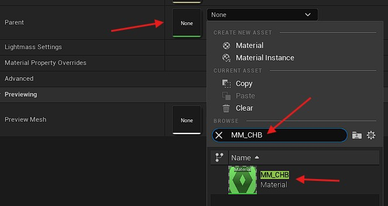
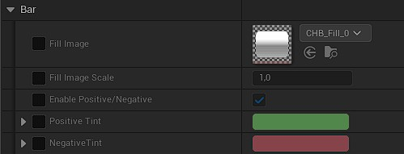
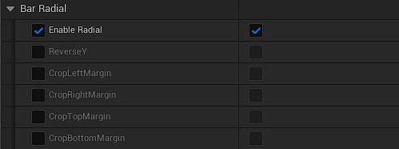
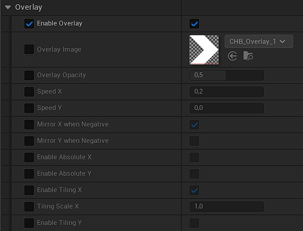
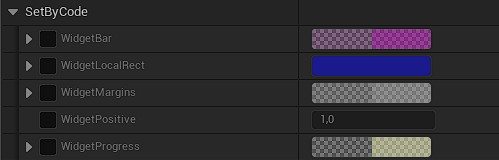
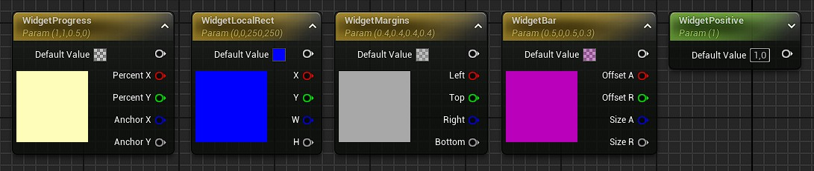
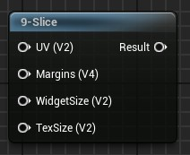
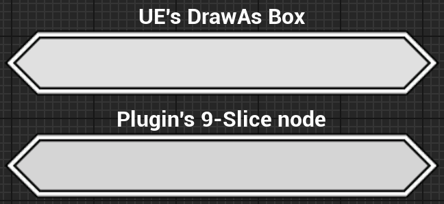

Customize Your Bars
This plugin lets you create virtually any style of bar. No matter how much experience you have with materials and shaders, you can customize your health and progress bars however you like.
Easy Customization
If you don't have much experience with materials in Unreal Engine, the plugin includes a basic material named MM_CHB.
This basic material is sufficient in most cases, so I'd recommend you to try it first before starting creating your own material.
The first thing is to create a new Material Instance and set its parent to MM_CHB.

After setting the parent, close the asset and re-open it to refresh the window.
Depending on your needs, you may have to create multiple material instances (background, fill, preview, fade).
There are a lot of parameters in the material to let you build the health bar you want.
Category: Bar

Fill Image: The texture used for the bar. It can be either the inner filling bar (for fill, preview and fade), or the background (if you want to use the material for the background, for example with radial bars).Fill Image Scale: Modify the pixel density of the fill texture. Useful to grow or shrink the size of the border.Enable Positive/Negative: Enable the use of the positive or negative value passed to the shader.Tint: The fill image will be multiplied with this color. If the positive/negative feature is enabled, you can set a separate color for the positive and negative case.
As of now, the Positive value is passed only to the preview and fade of the health bar widget. The fill and background will not have it.
I recommend you to use as much as possible a white tint (if disabling the positive/negative feature) so you will be able to use the same material and change the color in the widget itself.
Category: Radial

If you set the widget's filling type on Radial, you need to enable the radial feature on the material too.
This switches the UV coordinate from orthogonal to polar coordinate system. It adds 30% more instructions to the material, though.
ReverseY: This will reverse the Y axis of the UV to make it upside-down.Crop Margins: Those switches will crop out the borders of the texture. Useful if you want to use a box texture to make a full 360° bar without the left and right border. It is better to use directly a texture without the borders, though.
Category: Overlay

You can enable or disable the overlay on the bar. If you disable it, the material is more optimized.
Overlay Image: Set the texture you want for the overlay here.Overlay Opacity: Controls the lerp between theFill Imageand theOverlay Image.Speed X/Y: Animate the overlay along the X or Y axis at the specified speed. If you enabled the positive/negative feature, the speed will be reversed when negative.Mirror X/Y when Negative: If you enabled the positive/negative feature, the overlay will be mirrored along the X or Y axis if negative, instead of reversing the speed.Enable Absolute X/Y: If enabled, the texture UV will be screen space absolute instead of widget relative. For radial bar, absolute means the overlay UV will be absolute on the polar coordinate from the center of the widget, regardless of the bar size/thickness (X=0 means 0° and X=1 means 360°, and Y=0 means the center of the widget and Y=1 means the border of the widget).Enable Tiling X/Y: Use the overlay texture size to tile it on the X or Y axis.Tiling Scale X/Y: When the tiling is enabled on the axis, modify the scale the tiling.
Category: SetByCode

Those parameters are the ones (as the name of the category implies) set by the code of the plugin.
You can still set specific values to preview how it will behave but they will be overridden by the widget.
WidgetBar: Only for radial bars. Defines the offset and size on each axis.WidgetLocalRect: The location and size of the widget itself.WidgetMargins: The box margins to define the border area of the texture. This is the margins set in theDraw As Boxof the widget style.WidgetPositive: The boolean to control if the bar is positive (1) or negative (0). It is set only for the preview and fade bars.WidgetProgress: The progress percentage and the filling anchor for the filling bar.
Advanced Customization
You can create your own materials for your health bars. This section explains what the plugin offers to help you create amazing materials.
The widget automatically creates Dynamic Material Instances (MIDs) for the brushes if needed.
Exposed Parameters
If your materials contain specific parameters, the widget will update them every frame during the OnPaint cycle, allowing you to create advanced shaders (e.g. moving patterns, borders, tiling, etc.) that react to the bar's state.
Make sure your parameters are named exactly as described here!

9-Slice Material Node

Since I was not happy with the default Draw as Box of Unreal Engine, I've created a custom material node to make the 9-slice of the UV in the material.
By default, the 9-slice of UE (the Draw as Box) will stretch the borders when the size of the widget is smaller than the size of the borders.
So I've implemented a custom 9-slice node, usable in your materials, which properly handles the border's UVs when the size of the widget is smaller than the size of the borders.

The main issue is that this node needs some data not accessible by default in the material. The needed data are: the widget size and the brush's margin for the box.
Those parameters are provided from the parameters in the